노트
어휘: 운동(motion)의 연구에 사용되는 다음 어휘를 기록하세요. 학습 활동을 완료하면서 어휘에 관련된 정의와 핵심 용어를 채워 넣으세요.
- 위치(position)
- 속도(velocity)
- 속력(speed) 변위(displacement)
- 평균 속도(average velocity)
- 가속도(acceleration)
등속 운동과 비등속 운동
등속 운동(uniform motion)과 비등속 운동(non-uniform motion) 모두에 대해 계속 분석해 보겠습니다.
이 용어에 대해 이미 알고 있는 내용을 떠올려 보고, 다음 문구들을 적절한 운동 유형과 짝지어 보세요. 정답 확인 버튼을 눌러 이해도를 점검하세요.

직접 해보기!
등속 운동과 비등속 운동 시각화하기
다음의 '운동 중인 물체 시각화하기' 시뮬레이션을 사용하여 등속 운동의 위치-시간 그래프와 속력-시간 그래프를 만들고, 같은 그래프를 비등속 운동에 대해서도 만들어 보세요.
1. 등속 운동 중 위치-시간 그래프의 모양을 설명하세요.
직선.
2. 비등속 운동 중 위치-시간 그래프의 모양을 설명하세요.
비선형 그래프(곡선).
이 학습 활동에서 가속(비등속) 운동 그래프에 대해 더 자세히 배우게 됩니다.
시작 버튼을 눌러 다음 시뮬레이션에 접속하고 운동 중인 물체 시각화하기 활동새 창에서 열림 질문에 답하세요.
운동 중인 물체 시각화하기 활동 (새 창에서 열림) 의 접근성 버전은 여기를 누르세요.
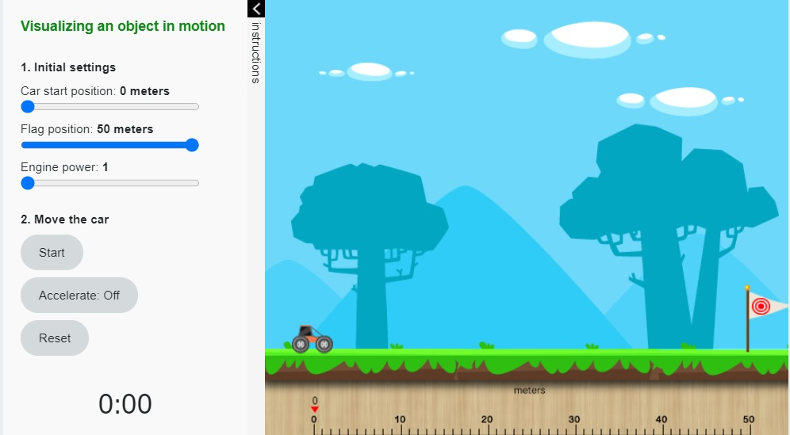
Start (새 창에서 열림)등속도
등속도(constant velocity)로 움직이는 물체는 방향이나 속력이 변하지 않습니다. 예를 들어, 서쪽으로 일정한 속력 102 km/h로 달리는 자동차는 등속도를 가집니다.
다음 공식을 사용하여 등속도를 구하세요:
이 공식은 물체의 속도를 구하는 대수적 방법입니다. 위치 대 시간 그래프가 있다면, 기울기(slope)는 다음 공식과 동일합니다.
다음 그래프의 세로축을 확인하여 속도-시간 그래프에서 직접 속도를 읽을 수도 있습니다.
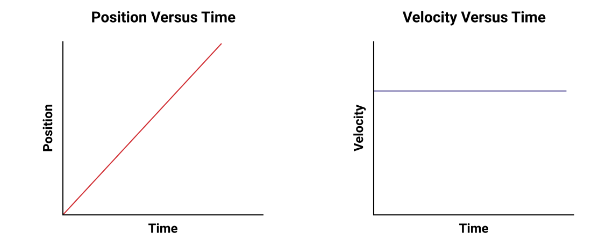
평균 속도
평균 속도는 물체의 속력 및/또는 방향이 변했을 수 있을 때 사용합니다. 다음 공식을 사용하여 평균 속도를 구할 수 있습니다:
그래프에서도 속도를 계산할 수 있습니다. 예를 들어, 다음 그래프를 분석해 봅시다. 0분에서 24분 사이, 그리고 0분에서 34분 사이의 평균 속도는 얼마일까요?
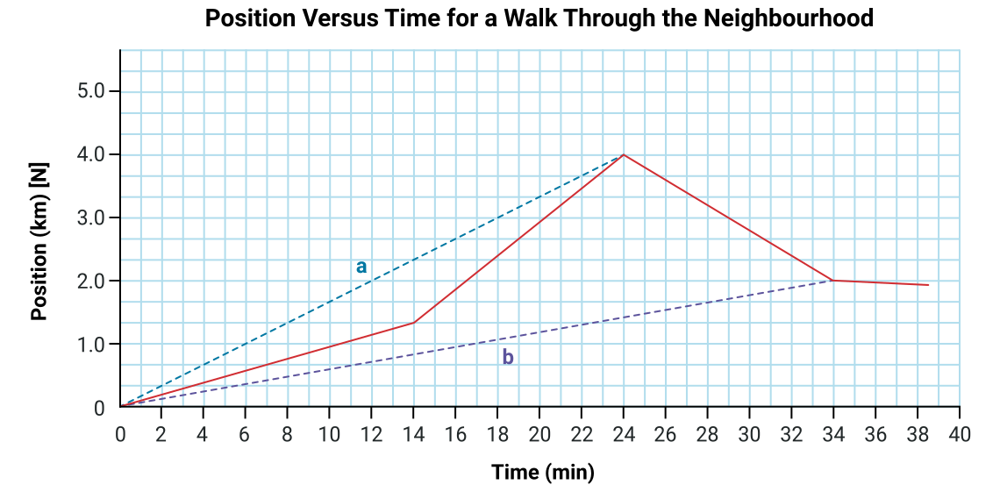
운동의 두 끝점을 잇는 직선의 기울기를 구합니다.
직선 a의 기울기는 0 – 24분의 평균 속도를 나타내고, 직선 b의 기울기는 0 – 34분의 평균 속도를 나타냅니다.
전체 변위는 방향의 반전이나 매우 복잡하고 구불구불한 경로를 포함할 수 있으므로, 전체 변위는 오해의 소지가 있을 수 있으며, 따라서 평균 속도가 항상 의미 있는 것은 아닙니다. 직선 b에 대한 는 직선 a에 대한 와 같은 방식으로 의미가 통하지 않습니다.
비등속 운동 (또는 가속 운동)
다음에 나오는 위치-시간 그래프를 검토하세요.
이 그래프들은 방금 살펴본 그래프들과 어떤 점이 다른가요? 어떤 점이 같은가요? 등속 운동을 나타내나요, 아니면 비등속 운동을 나타내나요?
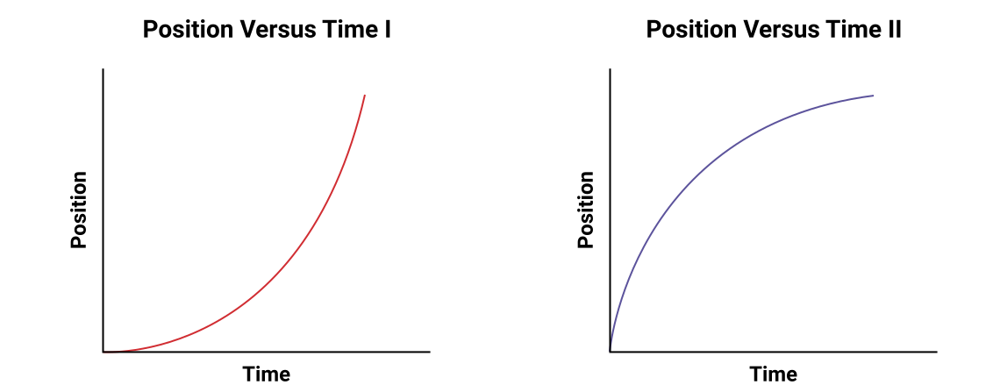
이 그래프들은 모두 위치-시간 그래프이므로, 곡선의 기울기를 분석하면 속도에 대한 정보를 알 수 있습니다.
기울기가 일정하지 않으므로, 이 그래프들은 등속 운동을 나타내지 않습니다. 기울기에 변화가 있으며, 이는 속도에 변화가 있다는 것을 의미하므로 이 그래프들은 비등속 운동을 나타냅니다.
주어진 점에서의 기울기가 물체의 속도라는 사실에 기반하여, 곡선의 모양은 물체가 시간이 지남에 따라 더 빠르게 움직이는지 더 느리게 움직이는지를 설명합니다.
첫 번째 그래프(위치 대 시간 I)에서, 기울기는 증가하고 있습니다(더 가파르게). 기울기 = 속도이므로, 속도도 증가하고 있으며, 이는 물체가 시간이 지남에 따라 점점 더 빠르게 움직인다는 것을 의미합니다.
두 번째 그래프(위치 대 시간 II)에서, 기울기는 감소하고 있습니다(더 평평하게). 기울기 = 속도이므로, 속도도 감소하고 있으며, 이는 물체가 시간이 지남에 따라 점점 더 느리게 움직인다는 것을 의미합니다.
속도가 변하고 있으므로, 그래프 위의 두 점을 잇는 직선의 기울기는 평균 속도를 나타냅니다.
다음 위치 대 시간 그래프에 그려진 두 직선에서 무엇을 발견할 수 있나요? 직선의 기울기를 곡선의 모양과 비교해 보세요. 어떤 경우에 직선의 기울기가 옆에 있는 곡선의 기울기와 더 유사한가요?
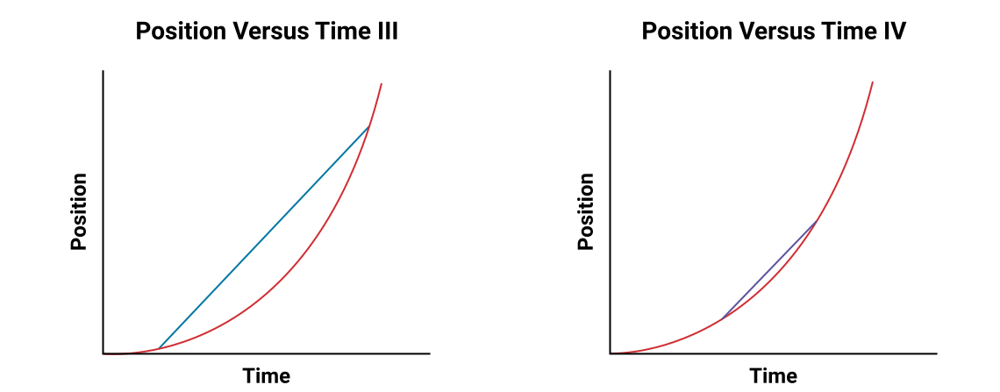
매우 가까운 두 끝점 사이에 직선을 그릴 수 있다면, 그 두 점 사이의 곡선 기울기를 매우 잘 근사할 수 있습니다. 이 아이디어를 사용하는 기법이 바로 곡선에 접선(tangent)을 그리는 것입니다.
참고
원에서 접선은 반지름에 수직이며 원과 한 점에서 접합니다.
이 과목에서 다루는 곡선은 원이 아니므로, 원의 접선 정의에 기반하여 접선의 위치를 근사하게 됩니다.
접선의 위치를 추정하는 것이므로, 하나의 정답이 아닌 수용 가능한 기울기의 범위가 있을 것입니다.
그래프 위의 한 점에 대한 접선은 순간 속도(그 순간의 속력과 방향)를 나타냅니다.
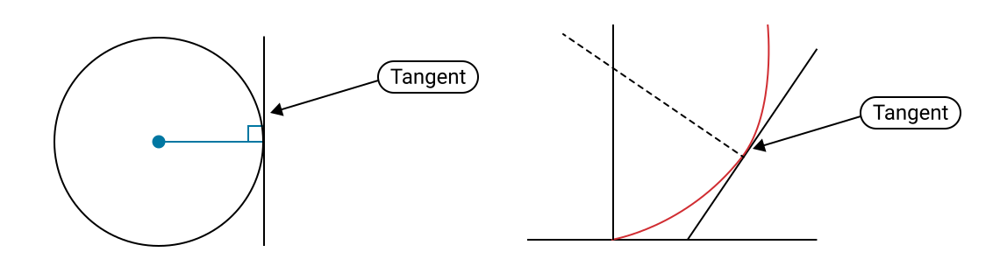
순간 속도
순간 속도(instantaneous velocity)는 특정 시점에서 물체의 속도입니다. 순간 속도를 구하기 위해 수학 공식을 사용하는 대신(이는 미적분학이 필요하며, 12학년에서 선택하여 공부할 수 있는 주제입니다), 위치-시간 그래프에 그린 접선의 기울기로부터 순간 속도를 근사합니다. 예를 들어, 그래프에서 초록색 선의 기울기가 3초에서의 순간 속도입니다.
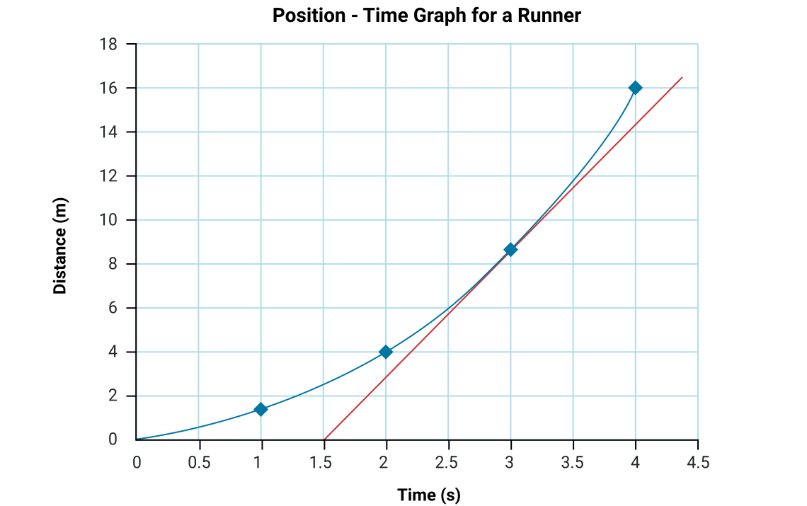
직접 해보기!
다음에 나오는 '함수의 접선' 시뮬레이션을 사용하여 이 활동을 완료하세요.
1) 점 A를 곡선을 따라 (-2,0)과 (0,0)으로 이동하여 해당 점에서의 접선 기울기를 관찰하세요.
2) 각 접선의 기울기를 계산하고 그 값을 기록하세요. (다음 접선을 시작하기 전에 하나의 접선을 그리고 기울기를 계산하세요.)
이러한 접선의 기울기를 계산할 때마다, 여러분은 순간 속도, 즉 접선이 곡선에 접하는 정확한 시점에서의 물체의 속도를 구하는 것입니다.
함수의 접선 (새 창에서 열림)의 접근성 버전은 여기를 누르세요.
가속도
가속도(acceleration)는 속도의 변화율입니다. 다시 말해, 물체의 가속도는 시간에 따라 속도가 변할 때 발생합니다.
이것은 벡터(vector)량이므로, 가속도의 방향에 대해 생각해야 합니다.
제공된 정의에 기반하여, 다음 공식을 사용하여 물체의 가속도를 계산하는 방정식을 사용할 수 있습니다:
공식
가속도:
그래프에서 가속도 구하기
위치-시간 그래프의 기울기는 시간에 따른 위치의 변화를 나타냈습니다. 즉, 속도입니다. 속도-시간 그래프에서도 유사한 분석을 수행할 수 있습니다. 속도-시간 그래프의 기울기는 속도의 변화율입니다. 방금 기록한 것처럼, 이것이 바로 가속도의 정의입니다!
예시 1: 등속도
속도-시간 그래프의 기울기는 물체의 가속도를 나타냅니다. 다음 그래프는 등속도를 나타냅니다. 이 그래프의 기울기를 구하려면, 다음 그래프에서 두 점을 선택한 후 다음 방정식을 사용하세요:
예를 들어, 점 (x1, y1) = (1 s, 25 m/s)과 (x2, y2) = (3 s, 25 m/s)을 사용합니다.
가속도는 0 m/s2 [N]입니다. 이는 물체가 가속하지 않는다는 것을 의미하며, 속도가 일정하므로 당연한 결과입니다.
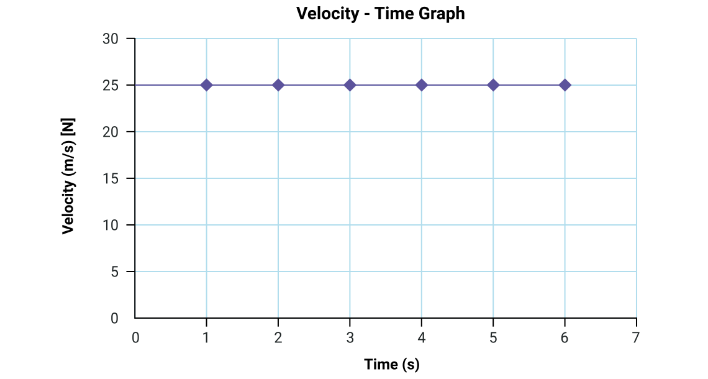
예시 2: 증가하는 속도
속도-시간 그래프의 기울기는 물체의 가속도를 나타냅니다. 다음 그래프는 증가하는 속도를 나타냅니다. 이 그래프의 기울기를 구하려면, 다음 그래프에서 두 점을 선택한 후 다음 기울기 방정식을 사용하세요.
예를 들어, 점 (x1, y1) = (1 s, 1 m/s)과 (x2, y2) = (4 s, 4m/s)을 사용합니다.
가속도는 1 m/s2 [N]입니다. 이는 물체의 속력이 매초 1 m/s씩 증가한다는 것을 의미합니다.
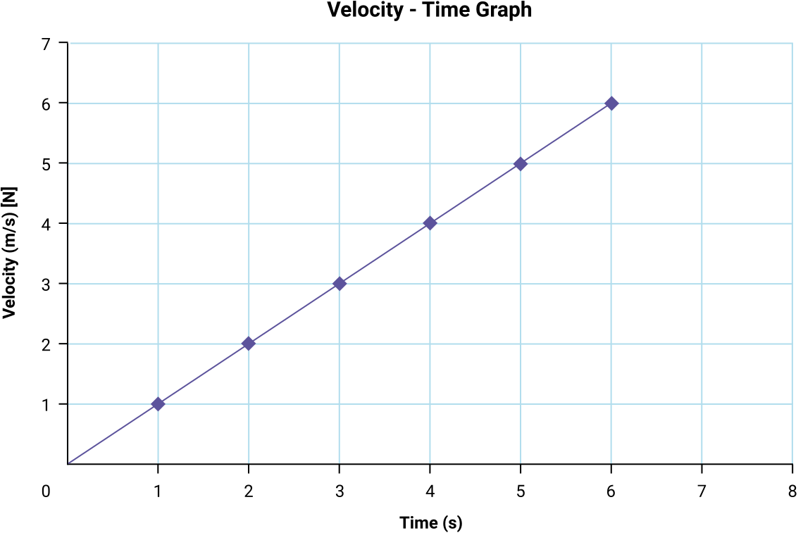
예시 3: 감소하는 속도
속도-시간 그래프의 기울기는 물체의 가속도를 나타냅니다. 다음 그래프는 감소하는 속도를 나타냅니다. 이 그래프의 기울기를 구하려면, 다음 그래프에서 두 점을 선택한 후 다음 기울기 방정식을 사용하세요.
예를 들어, 점 (x1, y1) = (1, 5)과 (x2, y2) = (5, 1)을 사용합니다.
가속도는 -1 m/s2 [N]입니다. 이는 물체의 속력이 변하고 있다는 것을 의미합니다. 속도가 매초 1 m/s [N]씩 감소하고 있습니다.
참고: 가속도를 올바르게 기록하려면 방향을 사용해야 합니다. 이 경우, 양의 방향이 북쪽이면, 가속도는 -1 m/s2 [N] 또는 1 m/s2 [S]입니다.
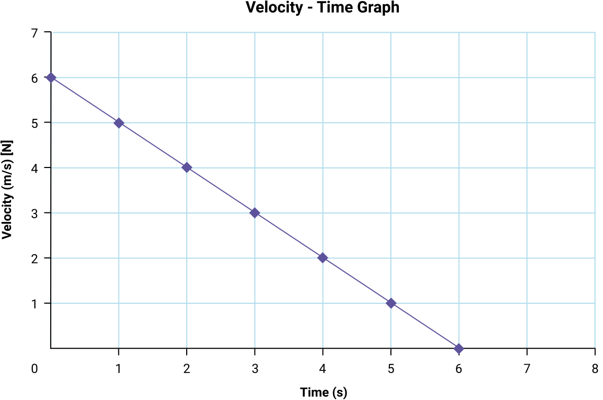
이 물체가 같은 비율로 계속 가속한다면, [북쪽] 방향의 속도는 음수가 될 것입니다. 관찰한다면, 물체는 처음에 6 m/s로 북쪽을 향해 이동하다가, 이 그래프에 표시된 운동 동안 감속하여 정지했습니다. 1초 후에는 -1 m/s [N], 즉 1 m/s [S]로 이동하게 됩니다 - 뒤로 가는 것입니다!
노트
노트를 사용하여 다음 각 문제를 풀어보세요. 여러분의 풀이를 예시 답안과 비교하여 이해도를 점검하세요.
1. 다음 그래프의 기울기를 사용하여 가속도를 구하세요.
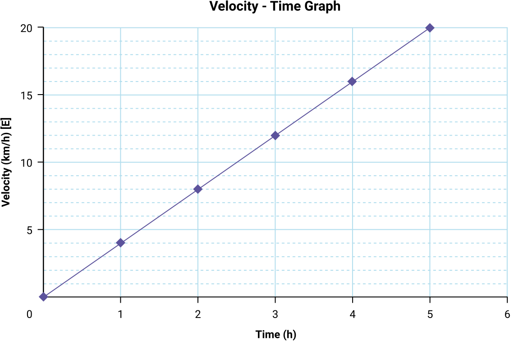
주어진 값:
두 점 선택:
미지수:
방정식:
풀이:
결론:
가속도는 [E]입니다.
속도-시간 그래프
속도-시간 그래프는 가속도 이상의 정보를 제공할 수 있습니다. Kingston으로 호박을 운반하는 철도 화차의 속도를 나타내는 이 그래프를 검토하세요. 이전에 배운 내용을 활용하여 다음 질문에 답해 보세요.
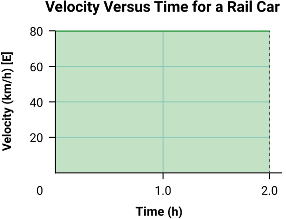
2. 철도 화차의 그래프는 어떤 유형의 운동을 보여주나요 (등속 또는 비등속)?
등속 운동 (속력과 방향이 일정하게 유지됨).
3. 철도 화차의 속도는 얼마인가요?
80 km/h [E]
4. 철도 화차의 가속도는 얼마인가요?
0 km/h2 (속도-시간 그래프의 기울기가 0)
속도 대 시간 그래프에서 변위 구하기
속도-시간 그래프는 철도 화차의 변위에 대한 정보도 제공할 수 있습니다.
속도-시간 그래프에서 변위는 속도-시간 곡선 아래의 넓이로 나타납니다. 이 경우 그래프는 직선이므로, 변위는 직선과 시간축이 이루는 직사각형의 넓이입니다. 직사각형의 넓이를 구하는 공식은:
A = 가로 세로
이 직사각형에서 가로는 2.0시간이고 세로는 80 km/h [E]입니다 (서로 바꿔도 결과에 영향을 주지 않습니다).
두 치수를 곱하면, 변위는 80 km/h [E] 2.0 h = 160 km [E]입니다 ('시간' 단위가 소거되므로). 이것이 변위와 같습니다.
속도-시간 그래프의 모양이 다른 경우에도 같은 방법으로 변위를 구할 수 있습니다. 예를 들어 다음 속도-시간 그래프의 색칠된 삼각형처럼 말입니다.
삼각형의 넓이를 구하는 공식은:
다음 속도-시간 그래프에서, 밑변은 6 s이고 높이는 6 m/s [N]이므로, 변위는 18 m [N]입니다.
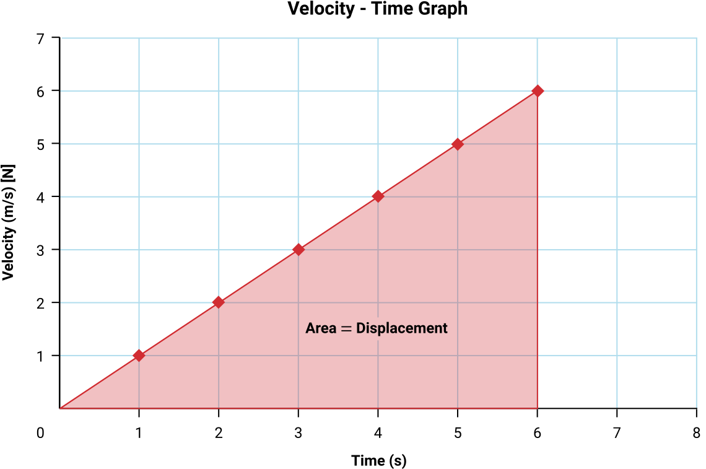
예시
속도-시간 그래프가 두 개의 다른 도형으로 이루어져 있으면, 각 도형의 넓이를 구한 후 더하여 전체 변위를 구합니다.
감을 잡을 수 있도록 다음 예시 몇 가지를 검토해 봅시다.
그래프 요약
다음 표는 이 두 가지 유형의 그래프에 대해 배운 내용을 요약합니다.
이어지는 문제에 필요하므로 정보를 검토하는 시간을 가지세요.
| 그래프 유형 | 기울기의 의미 | 넓이의 의미 |
|---|---|---|
| 위치 - 시간 (d-t) | 기울기 = 속도 | --의미 없음-- |
| 속도 - 시간 (v-t) | 기울기 = 가속도 | 변위 |
노트
그래프를 관찰하고 노트에 다음 질문에 답한 후, 여러분의 풀이를 예시 답안과 비교하세요.
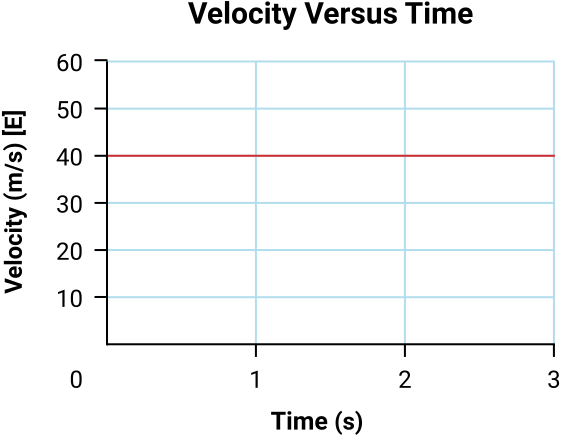
옆에 보이는 그래프 a) 속도 대 시간에서 3초 후의 변위와 가속도를 구하세요.
속도-시간 그래프가 수평이므로, 기울기는 0이고 따라서 가속도는 0 m/s²입니다. (선택적으로 [E]을 붙일 수 있습니다.)
속도-시간 그래프 아래의 넓이는 40 m/s [E] 3 s = 120 m [E].
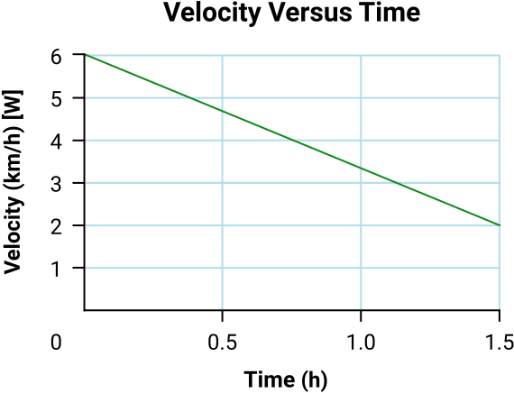
옆에 보이는 그래프 b) 속도 대 시간에서 1.5시간 후의 변위와 가속도를 구하세요.
기울기는 이므로 가속도는 2.7 km/h2입니다. 속도-시간 그래프 아래의 넓이는 삼각형과 직사각형으로 이루어져 있습니다.
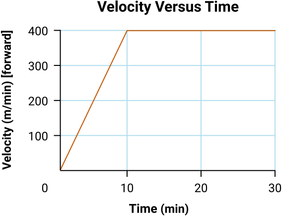
옆에 보이는 그래프 c) 속도 대 시간에서 30분 후의 변위를 구하세요.
속도-시간 그래프 아래의 넓이는 삼각형과 직사각형으로 나눌 수 있습니다. 삼각형의 넓이는 ½(10 min)(400 m/min [forward]) = 2000 m [forward]입니다.
직사각형의 넓이는 (20 min)(400 m/min [forward]) = 8000 m [forward]입니다.
넓이를 합하면, 변위는 10000 m [forward] (또는 10 km [forward])입니다.
운동학 방정식 (등가속도 운동)
그래프를 사용하여 운동을 연구했으므로, 이제 대수를 사용할 수도 있습니다. 이러한 상황에서의 운동 연구를 운동학(kinematics)이라 하며, 운동을 연구할 때 사용되는 일반 방정식들이 있습니다.
운동학 방정식 사용 방법
가속 운동을 완전히 분석하려면, 다양한 변수를 다루어야 합니다:
등가속도
초기 속도
최종 속도
변위
시간
이 등가속도 문제에는 다섯 개의 변수가 있습니다. 이 변수들 중 세 개의 값을 알면, 이전의 방정식을 사용하여 네 번째 변수의 값을 구할 수 있습니다.
어떤 방정식을 사용할지 결정하는 한 가지 방법은, 이 다섯 변수 중 필요하지 않은 것을 식별하고, 그 변수를 사용하지 않는 공식을 찾는 것입니다.
직접 해보기!
각 운동학 방정식에는 아래 나열된 네 변수 중 하나가 포함되지 않습니다. 선택지에서 빠진 변수를 해당 방정식과 짝지어 보세요:
선택지 1:
선택지 2:
선택지 3:
선택지 4:
선택지 5:
문제 풀이 전략 (운동학 방정식 사용)
다음은 등가속도 운동을 하는 물체를 분석하는 데 유용한 단계입니다:
- 양의 방향을 지정합니다.
- 주어진 정보를 변수 형태로 기록합니다.
- 미지의 정보를 변수 형태로 기록합니다.
- 사용할 적절한 방정식을 식별합니다 (미지수와 주어진 변수를 포함하는 것).
- 방정식을 기록합니다.
- 알려진 값을 대입합니다.
- 대수를 사용하여 미지 변수를 구합니다.
- 결론 문장을 작성합니다.
예시 1
75.0 km/h [south]로 순항하던 1969 Chevy Camaro가 2.40 m/s2 [south]로 5.30 s 동안 가속할 때의 변위를 구하세요.
남쪽을 양의 방향으로 설정합니다.
(참고: 남쪽이 양의 방향으로 지정되었으므로, 방향은 양의 값으로 나타냅니다)
(참고: 최종 답이 양수이므로, 변위의 방향은 남쪽입니다).
결론: Chevy Camaro의 변위는 144 m [south]입니다.
예시 2
2.7 m/s2 [west]로 3.2초간 가속한 후 112 km/h [west]의 속도에 도달한 1971 Dodge Challenger의 변위를 구하세요.
서쪽을 양의 방향으로 설정합니다.
주어진 값:
m/s로 변환:
미지수:
방정식:
풀이:
(참고: 최종 답이 양수이므로, 변위의 방향은 서쪽입니다).
결론: 자동차의 변위는 86 m [west]입니다.
예시 3
초기 속도 4.00 m/s [up]로 공중으로 던져진 공의 최대 높이를 구하세요. 이 공은 중력 가속도 9.8 m/s2 [down]을 경험합니다.
위쪽을 양의 방향으로 설정합니다.
주어진 값:
(참고: 위쪽을 양의 방향으로 설정했으므로, 가속도는 반대 방향이라 음수입니다).
공은 던져진 궤적의 꼭대기에서 최대 높이에 도달합니다. 이 지점에서 가속도에 의해 [down] 방향으로 움직이기 시작하기 전에 잠깐 동안 속도가 0 m/s [up]이 됩니다. 중력을 받는 물체의 최대 높이를 다룰 때, 운동학 방정식에서 이 속도가 0인 지점을 사용하세요.
미지수:
방정식:
풀이:
결론: 공이 도달하는 최대 높이는 0.82 m입니다.
노트
이제 노트에 다음 문제들을 풀고, 여러분의 풀이를 예시 답안과 비교하세요.
- 25 km/h [west]에서 3.2 m/s2 [west]로 176 m [west]를 가속한 1969 Ford Mustang의 최종 속도를 구하세요.
주어진 값:
[west]를 양의 방향으로 설정합니다.
(미터와 초로 변환)
미지수:
방정식:
주어진 값과 미지수 사이에서, 이 문제에 필요하지 않은 변수는 시간이므로, 시간을 포함하지 않는 운동학 방정식을 사용합니다.
풀이:
변수가 제곱되어 있으므로, 양변에 제곱근을 취합니다.
값이 양수이므로, [west] 방향입니다.
결론:
최종 속도는 34 m/s [W]입니다.
- Andrew는 식료품을 배달하기 위해 밴을 운전하고 있습니다. Elmvale의 92번 고속도로를 달리던 중, 여우 한 마리가 도로 위에 멈춰 섭니다. Andrew는 75 km/h [E]로 달리고 있었고 브레이크를 밟았을 때 여우로부터 42 m 떨어져 있었습니다. 정지하는 데 3.4초가 걸렸습니다.
- Andrew는 정지하기 전에 얼마나 이동했나요?
주어진 값:
[east]를 양의 방향으로 설정합니다.
미터와 초로 변환합니다.
(Andrew가 정지하는 순간을 분석하고 있으므로.)
미지수:
방정식:
가속도를 포함하지 않는 운동학 방정식을 선택합니다.
풀이:
변위가 양수이므로, 방향도 [east]입니다.
결론: Andrew는 정지하기 전에 35 m를 이동했습니다.
- Andrew가 여우를 쳤나요? 설명하세요.
Andrew는 여우를 치지 않았습니다. 정지하는 동안 35 m를 이동했고, 여우는 42 m 떨어져 있었으므로, 정지했을 때 그들 사이에 7 m의 공간이 있었습니다.
- 수박을 다리에서 3.2 m/s로 위로 던집니다. 중력 가속도 9.8 m/s2 [down]을 경험합니다.
- 2.0초 후 수박의 속도는 얼마인가요?
주어진 값:
양의 방향을 [down]으로 설정합니다. (이 문제는 [up]을 양의 방향으로 설정해도 같은 최종 결과로 풀 수 있습니다.)
(양의 방향이 [down]이고 이것은 [up]이므로 음수입니다.)
미지수:
방정식:
변위를 포함하지 않는 운동학 방정식을 선택합니다.
풀이:
먼저 최종 속도에 대해 재배열하거나, 대입한 후 재배열할 수 있습니다. 어떤 방법을 사용할지는 대수에 대한 편안함에 따라 달라집니다.
속도가 양수이므로, [down] 방향입니다.
결론:
2.0초 후 수박의 속도는 16 m/s [down]입니다.
- 2.0초 후, 다리를 기준으로 한 변위는 얼마인가요?
주어진 값:
양의 방향을 [down]으로 설정합니다. (이 문제는 [up]을 양의 방향으로 설정해도 같은 최종 결과로 풀 수 있습니다.)
(양의 방향이 [down]이고 이것은 [up]이므로 음수입니다.)
미지수:
방정식:
최종 속도를 포함하지 않는 운동학 방정식을 선택합니다.
풀이:
변위가 양수이므로, [down] 방향입니다.
결론:
2.0초 후 수박의 변위는 13 m [down], 즉 다리 아래입니다.

개념 정리하기
운동에 대한 많은 개념을 배웠습니다. 이러한 각 개념이 서로 어떻게 연관되는지 더 잘 이해하기 위해, 개념을 그래픽 오거나이저로 정리하면 도움이 될 수 있습니다.
개념 지도를 사용하여 다음 용어들을 서로의 관계에 따라 정리해 보세요.
노트
노트에서 이 과제를 완성하거나, 원한다면 다음의 인터랙티브 마인드맵 도구를 사용할 수 있습니다. 또 다른 대안으로는 선호하는 검색 엔진을 사용하여 온라인 마인드맵 도구를 찾는 것입니다.
포함할 용어:
- 운동(motion)
- 등속 운동(uniform motion)
- 비등속 운동(non-uniform motion)
- 거리(distance)
- 시간(time)
- 속력(speed)
- 위치(position)
- 변위(displacement)
- 속도(velocity)
- 가속도(acceleration)
마인드맵 (새 창에서 열림)의 접근성 버전은 여기를 누르세요.
복습
어휘 복습: 노트로 돌아가서 이 학습 활동에서 사용된 핵심 단어를 검토하세요. 이 용어들을 각각 설명할 수 있나요? 배운 내용을 설명하는 문단으로 작성할 수 있나요?
자기 점검 퀴즈
이해도를 점검해 보세요!
다음 자기 점검 퀴즈를 완료하여 학습 진행 상태와 집중해야 할 영역을 파악하세요.
이 퀴즈는 피드백 목적으로만 사용되며, 성적에 포함되지 않습니다. 이 퀴즈에 대한 시도 횟수는 무제한입니다. 시간을 들여 최선을 다하고, 제공된 피드백을 되돌아보세요.
퀴즈를 눌러 이 도구에 접속하세요.